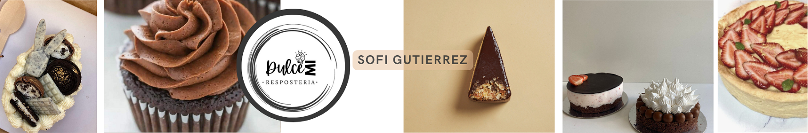

Soy Sofi, una apasionada repostera que ha convertido su amor por hacer tartas en su vocación. Lo que comenzó
como
un pasatiempo se ha transformado en una carrera emocionante y gratificante, mi vida gira en torno a la
creatividad
y la precisión que implica la creación de tartas exquisitas. Cada tarta que diseño y horneo es una expresión de
mi
habilidad artística y mi atención al detalle.
Desde el momento en que selecciono los ingredientes hasta el instante en que decoro la tarta, me sumerjo en un
mundo de sabores y texturas. Lo más sorprendente es que esta pasión se ha convertido en mi trabajo, y cada día
es
una emocionante aventura en el mundo de la repostería.
A lo largo de los años, he perfeccionado mi estilo único y ganado el reconocimiento de aquellos que disfrutan de
mis creaciones. Mis amigos y clientes a menudo me piden tartas personalizadas para celebraciones especiales, y
es
un honor para mí crear algo que se convierte en el centro de la celebración.
La repostería no solo es mi forma de vida, sino también mi vía para inspirar a otros y compartir la alegría de
saborear algo verdaderamente especial. Disfruto de la emoción en los rostros de las personas cuando prueban mis
tartas por primera vez, y es un recordatorio constante de por qué hago lo que hago.
Mi objetivo es seguir perfeccionando mi arte y explorando nuevas tendencias en el mundo de la repostería.
Siempre
estoy en busca de inspiración, ya sea a través de viajes, libros de cocina o simplemente observando la belleza
de
la naturaleza. Cada día es una oportunidad para crear algo hermoso y delicioso, y no puedo esperar a ver a dónde
me llevará esta dulce aventura.
Gracias por ser parte de este viaje conmigo. ¡Espero que disfrutes de mis tartas tanto como yo disfruto
creándolas!